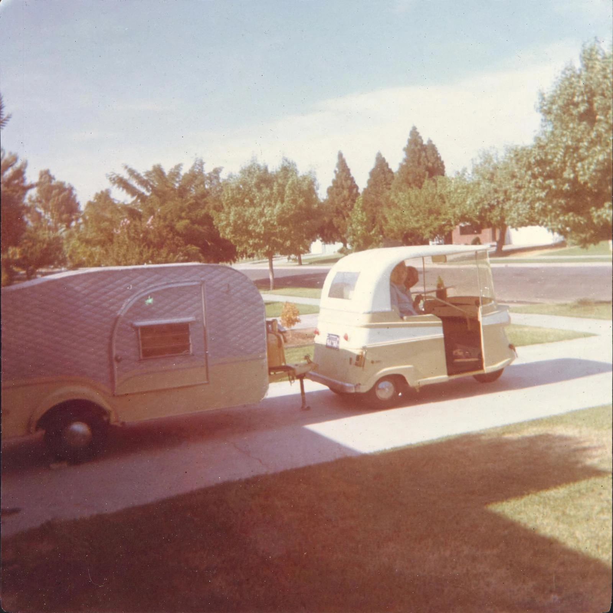

Your name is needed before recording, so your recording is filed under your name.
Ready when you are.
This recorder is part of the private family page. Sign in with your name and password to continue.
Record your voice. Send it, listen to it — then approve it, or delete it and record again. Nothing is kept unless you approve it.

Your name is needed before recording, so your recording is filed under your name.